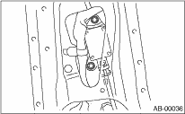
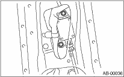

1. Turn the ignition switch to OFF.
2. Disconnect the ground cable from battery and wait for at least 20 seconds before starting work.
3. Remove the front outer belt. 
4. Detach the side airbag sensor, and then disconnect the airbag connector.

AIRBAG SYSTEM > Side Airbag Sensor
1. Turn the ignition switch to OFF.
2. Disconnect the ground cable from battery and wait for at least 20 seconds before starting work.
3. Remove the front outer belt.
4. Detach the side airbag sensor, and then disconnect the airbag connector.
